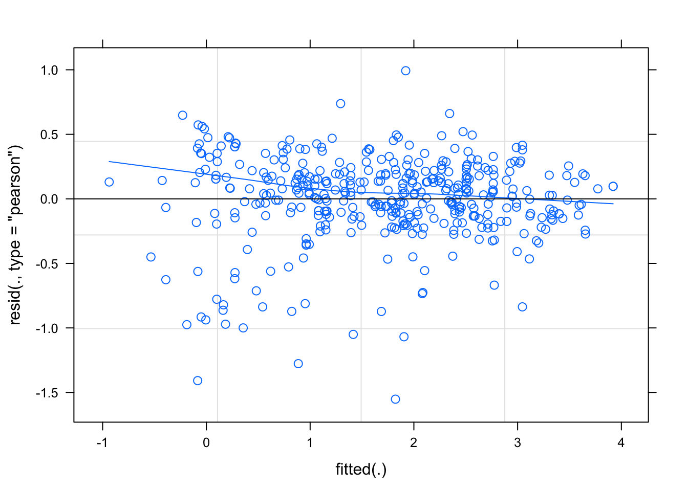
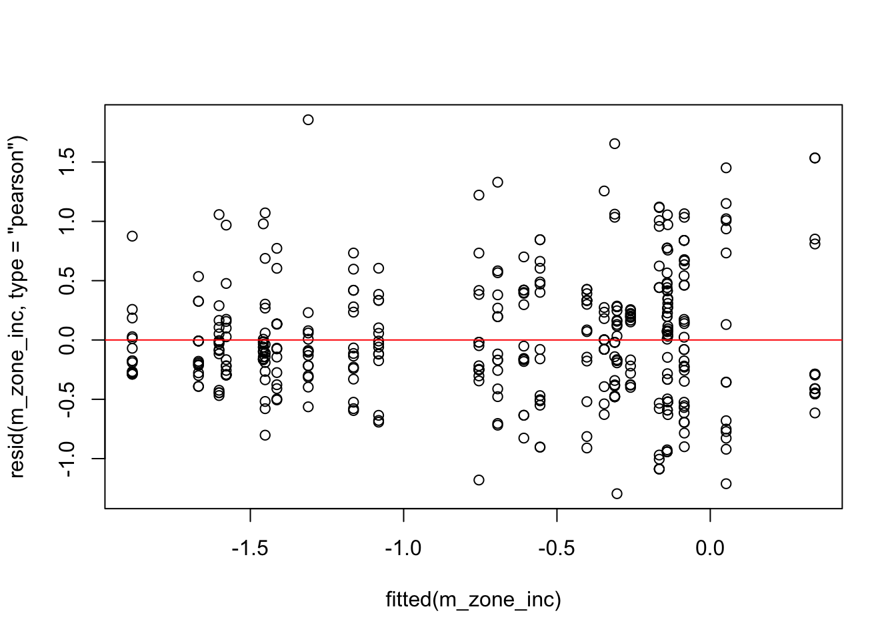
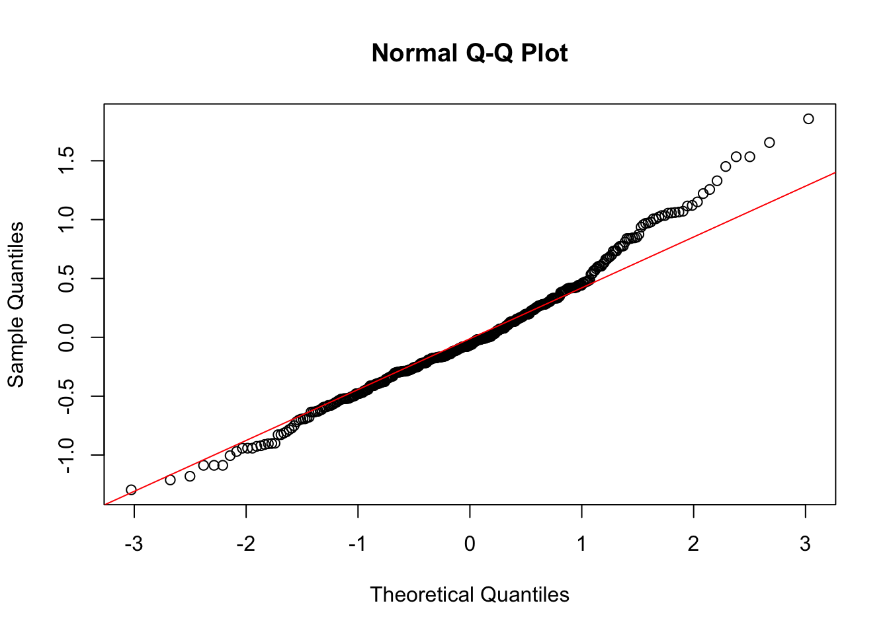
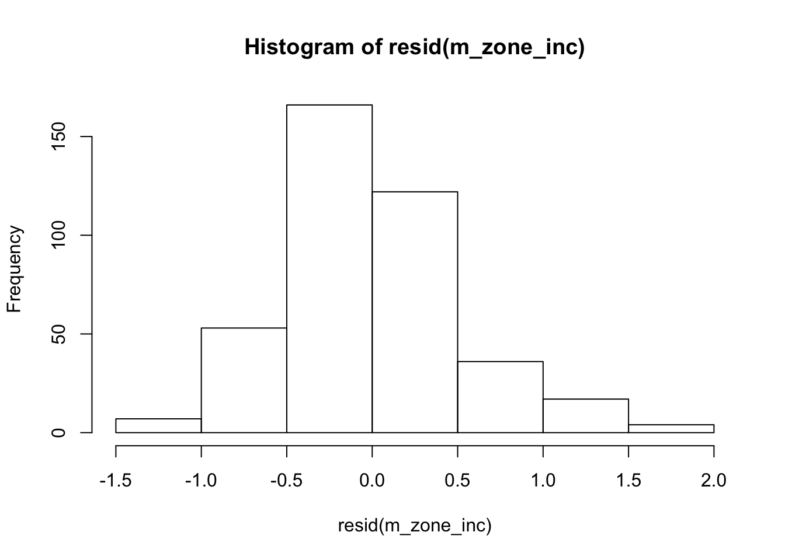
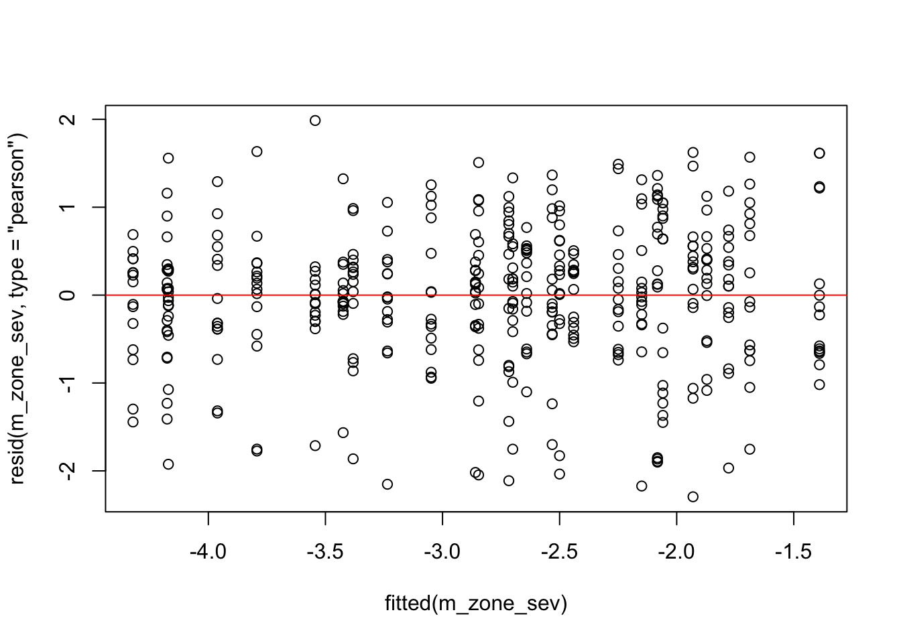
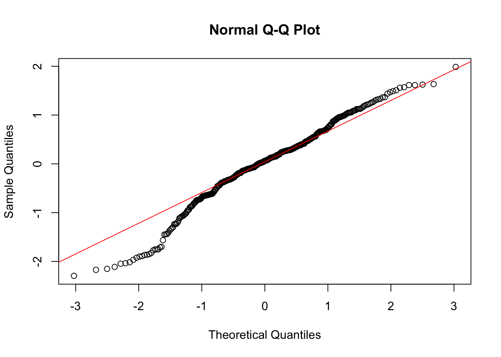
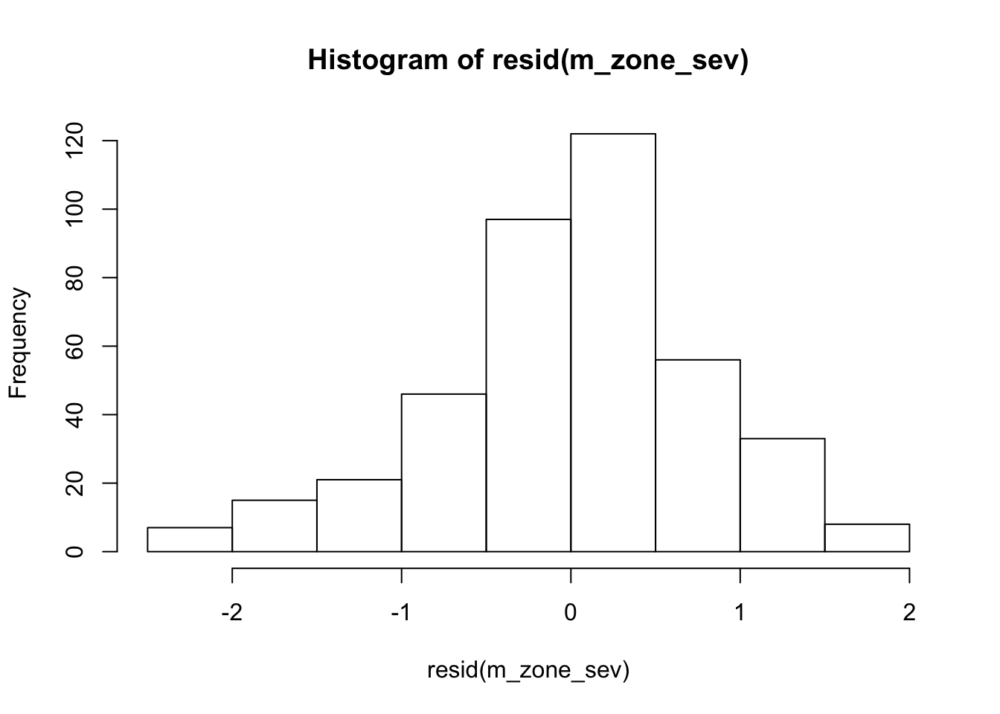
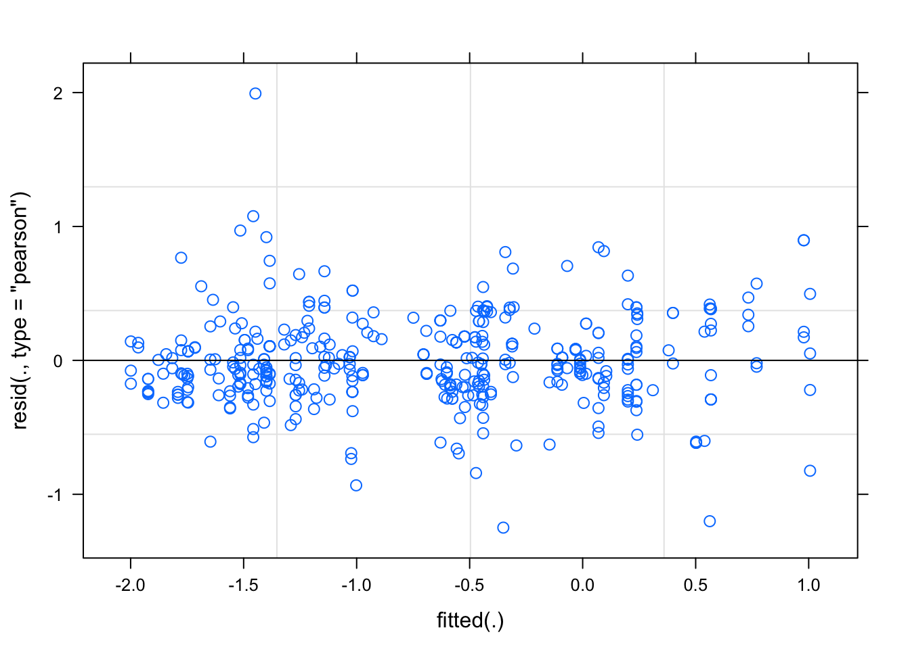

survey <- read_csv("data/survey_clean.csv")survey <- survey %>%
mutate(ID = seq(1, 1, by = 1))
# random intercept and slopes
mix1 <- lmer(log(sev2) ~ log(inc) + (log(inc) | district), data = survey)mix1@beta[1]## [1] -5.363283cis <- confint(mix1)
cis[5]## [1] -5.903924summary(mix1)## Linear mixed model fit by REML ['lmerMod']
## Formula: log(sev2) ~ log(inc) + (log(inc) | district)
## Data: survey
##
## REML criterion at convergence: 364.3
##
## Scaled residuals:
## Min 1Q Median 3Q Max
## -4.5204 -0.3849 0.1278 0.5555 2.8912
##
## Random effects:
## Groups Name Variance Std.Dev. Corr
## district (Intercept) 0.81648 0.9036
## log(inc) 0.04951 0.2225 -0.96
## Residual 0.11789 0.3433
## Number of obs: 405, groups: district, 27
##
## Fixed effects:
## Estimate Std. Error t value
## (Intercept) -5.36328 0.25421 -21.1
## log(inc) 2.05992 0.06822 30.2
##
## Correlation of Fixed Effects:
## (Intr)
## log(inc) -0.976
## convergence code: 0
## Model failed to converge with max|grad| = 0.02111 (tol = 0.002, component 1)library(lmerTest)
anova(mix1, ddf = "Kenward-Roger")library(piecewiseSEM)
summary(mix1)## Linear mixed model fit by REML ['lmerMod']
## Formula: log(sev2) ~ log(inc) + (log(inc) | district)
## Data: survey
##
## REML criterion at convergence: 364.3
##
## Scaled residuals:
## Min 1Q Median 3Q Max
## -4.5204 -0.3849 0.1278 0.5555 2.8912
##
## Random effects:
## Groups Name Variance Std.Dev. Corr
## district (Intercept) 0.81648 0.9036
## log(inc) 0.04951 0.2225 -0.96
## Residual 0.11789 0.3433
## Number of obs: 405, groups: district, 27
##
## Fixed effects:
## Estimate Std. Error t value
## (Intercept) -5.36328 0.25421 -21.1
## log(inc) 2.05992 0.06822 30.2
##
## Correlation of Fixed Effects:
## (Intr)
## log(inc) -0.976
## convergence code: 0
## Model failed to converge with max|grad| = 0.02111 (tol = 0.002, component 1)# plot the pearson's model residuals
plot(mix1, type = c("p", "smooth"))
vc <- VarCorr(mix1)
as.data.frame(vc, order = "lower.tri")rsquared(mix1)library(robustlmm)
mix1rob <- rlmer(log(sev2) ~ log(inc) + (inc | district),
data = survey,
method = "DASvar"
)
compare(mix1, mix1rob, show.rho.functions = FALSE)## mix1 mix1rob
## Coef
## (Intercept) -5.36 (0.2542) -5.1 (0.2202)
## log(inc) 2.06 (0.0682) 2.0 (0.0525)
##
## VarComp
## (Intercept) | district 0.90359 0.44166
## log(inc) | district 0.22250
## inc | district 0.00498
##
## Correlations
## (Intercept) x log(inc) | district -0.961
## (Intercept) x inc | district -1.000
##
## sigma 0.343 0.267
##
## REML 364summary(mix1rob)## Robust linear mixed model fit by DASvar
## Formula: log(sev2) ~ log(inc) + (inc | district)
## Data: survey
##
## Scaled residuals:
## Min 1Q Median 3Q Max
## -6.3308 -0.6526 0.0415 0.6342 3.6839
##
## Random effects:
## Groups Name Variance Std.Dev. Corr
## district (Intercept) 1.951e-01 0.441659
## inc 2.484e-05 0.004984 -1.00
## Residual 7.104e-02 0.266531
## Number of obs: 405, groups: district, 27
##
## Fixed effects:
## Estimate Std. Error t value
## (Intercept) -5.09829 0.22016 -23.16
## log(inc) 1.99802 0.05251 38.05
##
## Correlation of Fixed Effects:
## (Intr)
## log(inc) -0.984
##
## Robustness weights for the residuals:
## 331 weights are ~= 1. The remaining 74 ones are summarized as
## Min. 1st Qu. Median Mean 3rd Qu. Max.
## 0.212 0.419 0.669 0.651 0.889 0.996
##
## Robustness weights for the random effects:
## 46 weights are ~= 1. The remaining 8 ones are
## 7 8 11 12 19 20 31 32
## 0.705 0.705 0.984 0.984 0.536 0.536 0.969 0.969
##
## Rho functions used for fitting:
## Residuals:
## eff: smoothed Huber (k = 1.345, s = 10)
## sig: smoothed Huber, Proposal II (k = 1.345, s = 10)
## Random Effects, variance component 1 (district):
## eff: smoothed Huber (k = 1.345, s = 10)
## vcp: smoothed Huber (k = 1.345, s = 10)d2 <- data.frame(ranef(mix1rob)[1])
colnames(d2) <- c("intercept", "slope")m_zone_inc <- lmer(logit(inc / 100) ~ zone + (1 | district), survey, REML = F)
anova(m_zone_inc)library(car)
m_zone_inc2 <- lmer(logit(inc / 100) ~ zone*altitude + (1 | district), survey, REML = F)
car::Anova(m_zone_inc2)AIC(m_zone_inc)## [1] 732.9776plot(fitted(m_zone_inc), resid(m_zone_inc, type = "pearson"))# this will create the plot
abline(0,0, col="red")
qqnorm(resid(m_zone_inc))
qqline(resid(m_zone_inc), col = "red") # add a perfect fit line
hist(resid(m_zone_inc))
# Random Intercept and slope
m_zone_sev <- lmer(logit(sev2/100) ~ zone + (1 | district), survey, REML = F)
AIC(m_zone_sev)## [1] 1069.991anova(m_zone_sev)library(car)
car::Anova(m_zone_sev, type = "III")plot(fitted(m_zone_sev), resid(m_zone_sev, type = "pearson"))# this will create the plot
abline(0,0, col="red")
qqnorm(resid(m_zone_sev))
qqline(resid(m_zone_sev), col = "red") # add a perfect fit line
hist(resid(m_zone_sev))
m_alt_inc <- lmer(logit(inc / 100) ~ altitude + (1 | zone) + (1 | district), survey, REML = F)
anova(m_alt_inc)m_alt_inc## Linear mixed model fit by maximum likelihood ['lmerModLmerTest']
## Formula: logit(inc/100) ~ altitude + (1 | zone) + (1 | district)
## Data: survey
## AIC BIC logLik deviance df.resid
## 558.7778 578.7972 -274.3889 548.7778 400
## Random effects:
## Groups Name Std.Dev.
## district (Intercept) 0.2872
## zone (Intercept) 0.1760
## Residual 0.4425
## Number of obs: 405, groups: district, 27; zone, 9
## Fixed Effects:
## (Intercept) altitude
## 2.812588 -0.002248summary(m_alt_inc)## Linear mixed model fit by maximum likelihood . t-tests use Satterthwaite's
## method [lmerModLmerTest]
## Formula: logit(inc/100) ~ altitude + (1 | zone) + (1 | district)
## Data: survey
##
## AIC BIC logLik deviance df.resid
## 558.8 578.8 -274.4 548.8 400
##
## Scaled residuals:
## Min 1Q Median 3Q Max
## -3.5324 -0.5722 -0.1268 0.5375 4.7904
##
## Random effects:
## Groups Name Variance Std.Dev.
## district (Intercept) 0.08248 0.2872
## zone (Intercept) 0.03097 0.1760
## Residual 0.19581 0.4425
## Number of obs: 405, groups: district, 27; zone, 9
##
## Fixed effects:
## Estimate Std. Error df t value Pr(>|t|)
## (Intercept) 2.813e+00 2.406e-01 1.658e+02 11.69 <2e-16 ***
## altitude -2.247e-03 1.445e-04 2.343e+02 -15.56 <2e-16 ***
## ---
## Signif. codes: 0 '***' 0.001 '**' 0.01 '*' 0.05 '.' 0.1 ' ' 1
##
## Correlation of Fixed Effects:
## (Intr)
## altitude -0.937car::Anova(m_alt_inc)m_alt_sev <- lmer(logit(sev2 / 100) ~ altitude + (1 | zone) + (1 | district), survey, REML = F)
anova(m_alt_sev)car::Anova(m_alt_sev)m_alt_inc_zone <- lmer(logit(inc/100 ) ~ altitude * zone + (1 | district), survey, REML = F)
summary(m_alt_inc_zone)## Linear mixed model fit by maximum likelihood . t-tests use Satterthwaite's
## method [lmerModLmerTest]
## Formula: logit(inc/100) ~ altitude * zone + (1 | district)
## Data: survey
##
## AIC BIC logLik deviance df.resid
## 554.9 635.0 -257.5 514.9 385
##
## Scaled residuals:
## Min 1Q Median 3Q Max
## -3.2089 -0.5685 -0.0957 0.4815 4.6792
##
## Random effects:
## Groups Name Variance Std.Dev.
## district (Intercept) 0.04227 0.2056
## Residual 0.18930 0.4351
## Number of obs: 405, groups: district, 27
##
## Fixed effects:
## Estimate Std. Error df t value Pr(>|t|)
## (Intercept) 8.511e-01 7.853e-01 4.009e+02 1.084 0.27910
## altitude -7.735e-04 5.239e-04 3.700e+02 -1.476 0.14071
## zoneBench Maji 2.435e+00 8.922e-01 4.050e+02 2.729 0.00663 **
## zoneGedio 2.611e+00 1.033e+00 2.199e+02 2.528 0.01216 *
## zoneIlu AbaBora 3.104e+00 1.042e+00 2.598e+02 2.979 0.00317 **
## zoneJimma 2.472e+00 1.260e+00 3.599e+02 1.961 0.05063 .
## zoneKeffa 8.145e-01 1.545e+00 4.040e+02 0.527 0.59846
## zoneSheka 3.039e+00 1.026e+00 3.267e+02 2.961 0.00329 **
## zoneSidama 8.534e-01 9.157e-01 3.251e+02 0.932 0.35206
## zoneWest Wellega 1.509e+00 9.872e-01 2.648e+02 1.528 0.12762
## altitude:zoneBench Maji -1.795e-03 6.112e-04 3.805e+02 -2.936 0.00353 **
## altitude:zoneGedio -2.033e-03 6.646e-04 2.840e+02 -3.058 0.00244 **
## altitude:zoneIlu AbaBora -2.106e-03 6.648e-04 3.299e+02 -3.168 0.00168 **
## altitude:zoneJimma -1.693e-03 7.826e-04 3.926e+02 -2.163 0.03111 *
## altitude:zoneKeffa -8.470e-04 9.272e-04 3.959e+02 -0.914 0.36152
## altitude:zoneSheka -1.996e-03 6.671e-04 3.780e+02 -2.992 0.00295 **
## altitude:zoneSidama -1.090e-03 6.004e-04 3.820e+02 -1.815 0.07025 .
## altitude:zoneWest Wellega -1.066e-03 6.509e-04 3.191e+02 -1.637 0.10265
## ---
## Signif. codes: 0 '***' 0.001 '**' 0.01 '*' 0.05 '.' 0.1 ' ' 1car::Anova(m_alt_inc_zone, type = "III")zone_alt_inc <- data.frame(emtrends(m_alt_inc_zone, pairwise ~ zone, var = "altitude" ))m_alt_sev_zone <- lmer(logit(sev2 ) ~ altitude * zone + (1 | district), data = survey, REML = F)
car::Anova(m_alt_sev_zone)zone_alt_sev <- data.frame(emtrends(m_alt_sev_zone, pairwise ~ zone, var = "altitude" ))m_altcropsys_inc <- lmer(logit(inc / 100) ~ cropping_system * altitude
+ (cropping_system | district), survey, REML = F)
car::Anova(m_altcropsys_inc)m_altcropsys_sev <- lmer(logit(sev2/100 ) ~ altitude * cropping_system
+ (cropping_system | district), survey, REML = F)
car::Anova(m_altcropsys_sev)m_altcult_inc <- lmer(logit(inc / 100) ~ altitude + (1 | district), survey, REML = F)
m_altcult_inc2 <- lmer(logit(inc / 100) ~ altitude * cultivar + (cultivar | district), survey, REML = F)
anova(m_altcult_inc, m_altcult_inc2)car::Anova(m_altcult_inc2)m_altcult <- lmer(logit(sev2 / 100) ~ altitude * cultivar + (cultivar | district), survey, REML = F)
car::Anova(m_altcult)m_altshade_inc <- lmer(logit(inc / 100) ~ altitude * shade + (shade | district), survey, REML = F)
Anova(m_altshade_inc)m_altshade <- lmer(logit(sev2 / 100) ~ altitude * shade + (shade | district), survey, REML = F, control = lmerControl(optimizer = "Nelder_Mead"))
car::Anova(m_altshade)m_altfarm_inc <- lmer(logit(inc / 100) ~ farm_management * altitude + (farm_management | district), survey, REML = F)
car::Anova(m_altfarm_inc)plot(m_altfarm_inc)
m_altfarm <- lmer(logit(sev2 / 100) ~ altitude * farm_management + (farm_management | district), survey, REML = F)
car::Anova(m_altfarm)